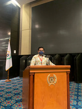

-
2018 - Present
Indonesian Solidarity Party
Provincial Branch of DKI JakartaORGANIZATION AND INTERNAL PARTY AFFAIRS INTERN
Monitored more than 50+ legislative recess and regional regulation socialization and recapitulate the report in order to increase the accountability of party legislative members.
Conducted 1 (one) financial and operational audits of parliamentary recess to prepare recommendations for chairman of the party to take corrective action against member of the legislature who violated recess SOP’s.
-
2016 - 2018
associate design director
MEDIA MONITORING INTERN
FOR DR. MARDANI ALI SERA M.ENG.
Directed parliamentary activities media coverage.
Managed 10+ weekly online news report.
Analyzed 5 (five) discourse and national issues.
2016 - 2018
House of Representatives of the Republic of Indonesia
documentation

